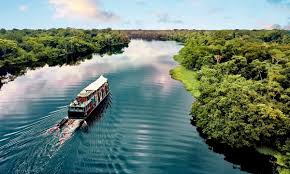

Geografía del Amazonas
Territorio selvático y fluvial
El Amazonas colombiano es una vasta región de selva tropical húmeda en el sur del país, dominada por bosques densos e interconectada por una red de ríos y afluentes. Su paisaje, escasamente poblado, sustenta culturas indígenas ancestrales y una enorme biodiversidad.

Clima cálido y húmedo
El clima del Amazonas es cálido y húmedo durante todo el año, con temperaturas promedio entre 25°C y 30°C. Las lluvias son abundantes, especialmente entre marzo y mayo, lo que mantiene la selva verde y llena de vida en cada rincón.

Ríos, lagunas y vida acuática
El Amazonas colombiano está atravesado por una red inmensa de ríos, quebradas y lagunas que dan vida a toda la región. El río Amazonas, junto con afluentes como el Putumayo y el Caquetá, forman un sistema hídrico vital que conecta comunidades, especies y ecosistemas. Estas aguas son hogar de una biodiversidad sorprendente: delfines rosados, peces gigantes como el paiche, nutrias, tortugas y una gran variedad de aves acuáticas. Además, las riberas albergan bosques inundables conocidos como varzeas, fundamentales para la fertilidad del suelo y el equilibrio ecológico.
Vegetación tropical y exuberante
La selva amazónica es uno de los ecosistemas más ricos y diversos del planeta. Su vegetación está compuesta por árboles gigantes que alcanzan más de 40 metros de altura, como la ceiba, el caucho y la lupuna, que forman un techo verde casi impenetrable. En los niveles inferiores crecen palmas, helechos, bromelias y orquídeas que aprovechan la humedad constante y la luz filtrada. Esta densa cobertura vegetal regula el clima, produce gran parte del oxígeno del planeta y sirve de refugio a miles de especies animales. Cada planta cumple un papel esencial dentro del equilibrio de la selva, haciendo del Amazonas un verdadero pulmón del mundo.

Fauna exótica y biodiversa
El Amazonas alberga una fauna impresionante: delfines rosados, jaguares, monos aulladores, perezosos, anacondas y miles de aves de colores. Es un santuario natural donde la vida se expresa en su máxima diversidad.
Naturaleza para explorar y proteger
El Amazonas es un lugar que invita a la aventura y a la reflexión. Explorar sus ríos, selvas y senderos permite descubrir una biodiversidad única y aprender del conocimiento ancestral de las comunidades indígenas que han vivido en armonía con la naturaleza por siglos. Sin embargo, esta riqueza natural enfrenta amenazas como la deforestación, la minería ilegal y el cambio climático. Proteger el Amazonas no es solo una tarea local, sino un compromiso global para garantizar el equilibrio del planeta y el bienestar de las generaciones futuras. Cada visitante tiene la oportunidad de admirar su belleza y, al mismo tiempo, convertirse en un guardián de este tesoro verde.
